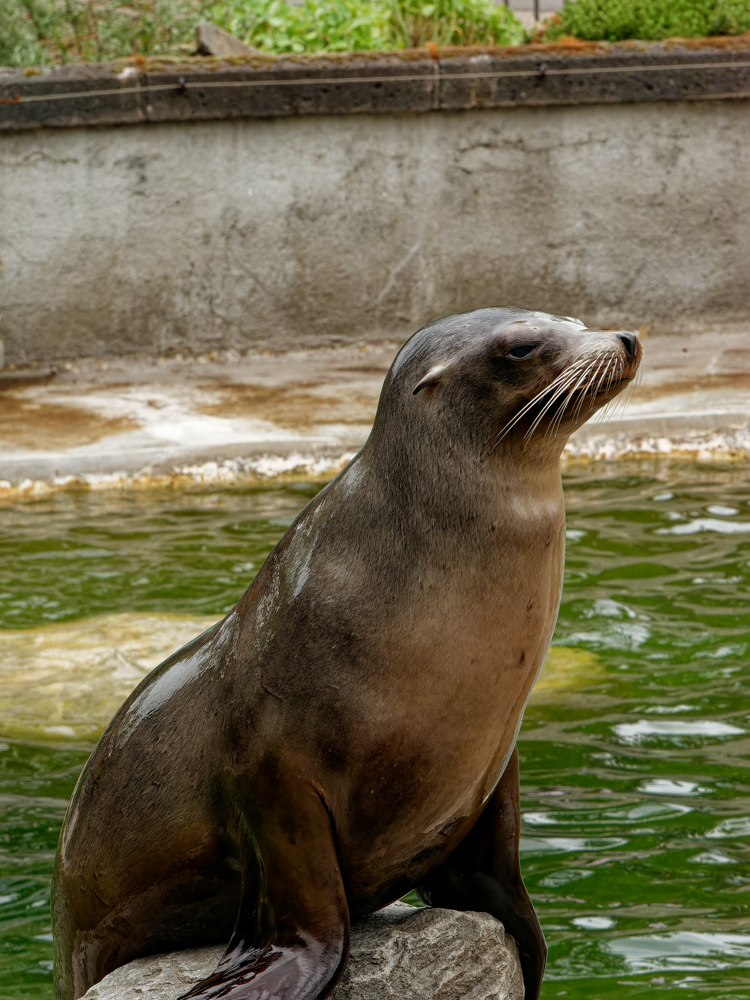

Abrace-se para comemorar!
Merulhe e Descubra o Encanto dessas Maravilhas Aquáticas
Explorando o Mundo das Focas

Segure suas barbatanas, porque estamos prestes a embarcar em uma
jornada nas vidas das focas! Esses mamíferos aquáticos adoráveis são
verdadeiras estrelas do oceano, e eles têm algumas histórias
incrivelmente legais para contar.
Desde o frio Ártico até as praias ensolaradas, as focas dominaram a
arte de desfrutar a vida tanto acima quanto abaixo das ondas. Vamos
mergulhar nas profundezas do conhecimento sobre as focas
Estilo e Movimentos
As focas são conhecidas por suas elegantes habilidades de natação, muitas vezes rivalizando com as de nadadores olímpicos de elite. Suas barbatanas, semelhantes a atletas bem treinados, as guiam sem esforço através da água com uma graça hipnotizante.
Um aspecto fascinante é o isolamento natural delas: camadas de
gordura. Esse mecanismo de aquecimento incorporado permite que elas
prosperem em diversas temperaturas da água.
Imagine essas criaturas deslizando sob a superfície da água - uma
dança perfeita com as correntes, seus corpos aerodinâmicos se
movendo com fluidez e elegância. É um testemunho da adaptabilidade
da natureza e da impressionante beleza da vida aquática.
Encontros de Focas

Adivinhe onde você pode encontrar essas criaturas fantásticas? Desde
as zonas de mergulho geladas dos polos até os locais descontraídos e
ensolarados da costa, as focas sabem escolher seus refúgios.
Elas adoram descansar em praias rochosas, exibindo seu pelo beijado
pelo sol e, ocasionalmente, dando uma escorregada na água como quem
dança o cha-cha-cha.
Conheça a Equipe das Focas


Conheça os VIPs (Muito Importantes Pinnípedes)! Temos a
foca-portuguesa, a foca-cinzenta, a foca-elefante (sim, aquela com o
nariz engraçado) e a feroz foca-leopardo. É como um elenco repleto de
estrelas do oceano!
Cada uma tem suas próprias peculiaridades e habilidades, tornando-as
verdadeiras ícones do tapete vermelho subaquático.
Fatos Interessantes Sobre as Focas

Mergulhe no mundo das focas, essas encantadoras criaturas do mar com um talento para o extraordinário. Desde segurar a respiração como campeões subaquáticos até usar seus bigodes como um GPS subaquático, essas maravilhas marinhas são verdadeiros espetáculos.
As focas dominam a arte de prender a respiração, deixando qualquer mergulhador profissional com inveja. E esses bigodes? Eles são como o próprio GPS da natureza, guiando esses exploradores subaquáticos em suas aventuras aquáticas.
Para uma exploração mais profunda da incrível vida das focas, visite sealworld.com